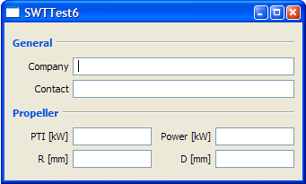
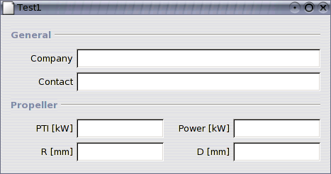

SwtForms
Florian Fankhauser
April 06, 2005
Preface
SwtForms is a partial port of JGoodies Forms for use
with the SWT (Standard Widget Toolkit) from the eclipse project. The original
product JGoodies Forms is a
ingenious
Layout Manager for Java Swing from Karsten Lentzsch. Forms was released
under the BSD License, (c) 2003 JGoodies Karsten Lentzsch.
Differences to JGoodies Forms 1.0.2 (not complete)
- Java AWT "Component" objects are in SwtForms mostly SWT "Control"
objects.
- Java Swing "JPanel" objects are in SwtForms mostly SWT
"Composite" objects.
- The PanelBuilder never creates the composite for layout, you have
to provide it to the construcor. Therefore the PanelBuilder has no
getPanel() method.
- There exists no FormDebugPanel for debugging. To debug a layout,
you can use the method "debugLayout()" from the FormDebugUtils
class to turn on the debug grid on a composite.
- The "DialogUnit to pixel" - conversion need more work. The
controls seems to be too small.
- The PanelBuilder has an additional "addButton()" method to create
a Button and set its text with one line of code, wich ist not possible
in SWT, is it?
Download
swtforms-0_8_5-20050406.zip
Contact
swtforms@ffxml.net
History
Version 0.8.2 - January 21, 2004: Renamed
project from "SharpLayout" to "SwtForms"
Version 0.8.3 - January 26, 2004:
ButtonBarFactory didn't work yet. Fixed.
See API Docs for usage. Needs a review for a more SWT specific way.
Version 0.8.4 - March 22, 2004: + DefaultFormBuilder &
I15dPanelBuilder from the extras package. Thanks Zohar.
DefaultFormBuilder Example
Version 0.8.5 - April 10, 2005: Removed dependency on awt Insets class
by implementing an own Insets class. Reason: problems on Mac OS X.
Thanks Praveen.
Example
Windows Screenshot:

Linux Screenshot:

import net.ffxml.swtforms.builder.PanelBuilder;
import net.ffxml.swtforms.layout.CellConstraints;
import net.ffxml.swtforms.layout.FormLayout;
import org.eclipse.swt.SWT;
import org.eclipse.swt.widgets.Display;
import org.eclipse.swt.widgets.Shell;
import org.eclipse.swt.widgets.Text;
public class SWTTest6 {
public static void main(String[] args) {
Display display = new Display();
Shell shell = new Shell(display);
createContents(shell);
shell.pack();
shell.setText("SWTTest6");
shell.open();
while (!shell.isDisposed()) {
if (!display.readAndDispatch())
display.sleep();
}
}
protected static void createContents(Shell shell) {
FormLayout layout = new FormLayout(
"r:max(50dlu;p), 3dlu, 70dlu:grow, 3dlu, r:max(50dlu;p), 3dlu, 70dlu",
"p, 3dlu, p, 3dlu, p, 3dlu, p, 3dlu, p, 3dlu, p");
CellConstraints cc = new CellConstraints();
PanelBuilder builder = new PanelBuilder(shell, layout);
builder.setDefaultDialogBorder();
builder.addSeparator("General", cc.xywh(1, 1, 7, 1));
builder.addLabel("Company", cc.xy(1, 3));
builder.add(new Text(shell, SWT.BORDER), cc.xywh(3, 3, 5, 1));
builder.addLabel("Contact", cc.xy(1, 5));
builder.add(new Text(shell, SWT.BORDER), cc.xywh(3, 5, 5, 1));
builder.addSeparator("Propeller", cc.xywh(1, 7, 7, 1));
builder.addLabel("PTI [kW]", cc.xy(1, 9));
builder.add(new Text(shell, SWT.BORDER), cc.xy(3, 9));
builder.addLabel("Power [kW]", cc.xy(5, 9));
builder.add(new Text(shell, SWT.BORDER), cc.xy(7, 9));
builder.addLabel("R [mm]", cc.xy(1, 11));
builder.add(new Text(shell, SWT.BORDER), cc.xy(3, 11));
builder.addLabel("D [mm]", cc.xy(5, 11));
builder.add(new Text(shell, SWT.BORDER), cc.xy(7, 11));
}
}
Links